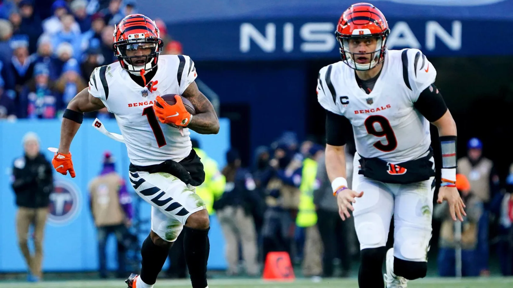
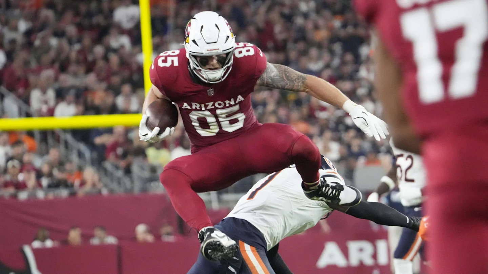
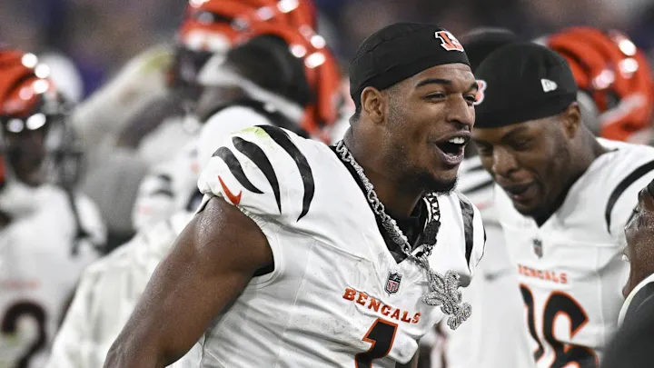
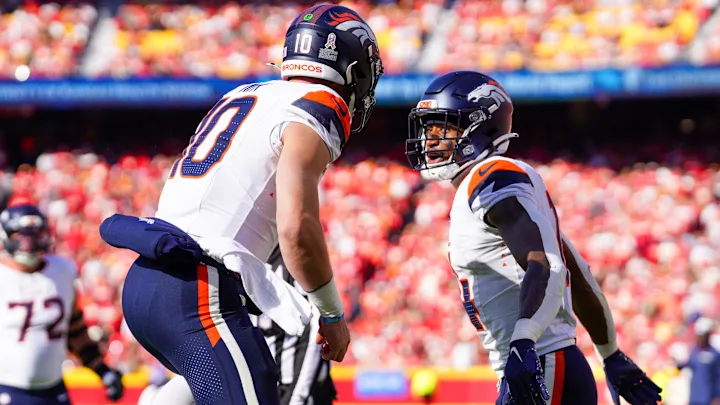
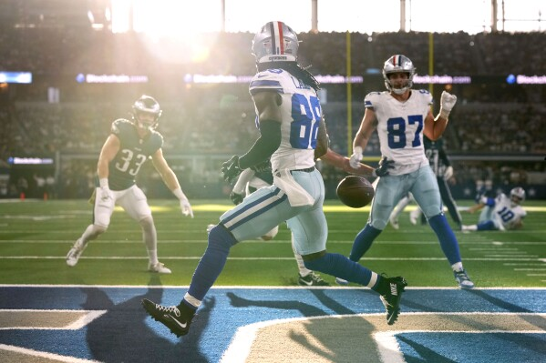
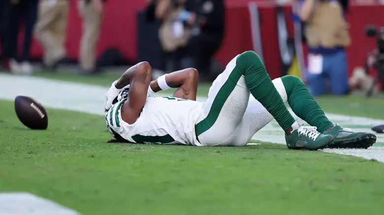
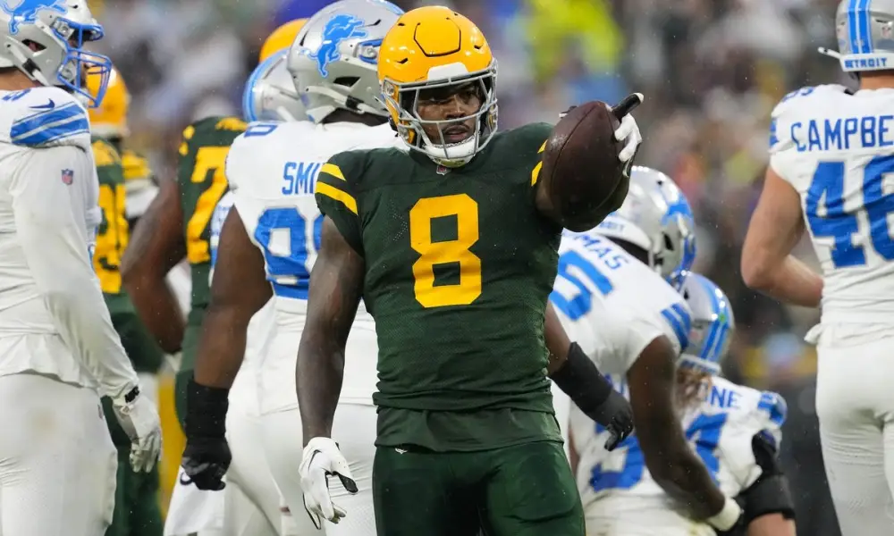
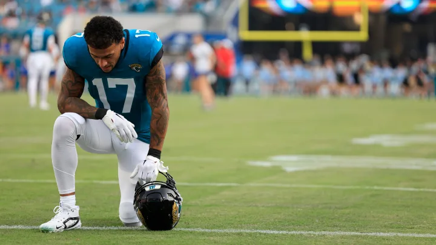
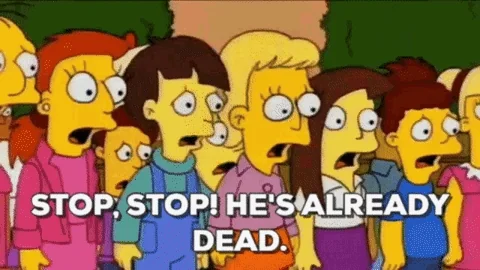
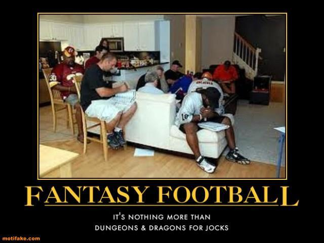

There are three regular-season games left - it all comes down to this.
~~Matchup of the Week~~
Week 11 Matchup Review
(#ranking is based on league standings)
#1 Mr. Turna 2-to-uh-4 (8-2) vs. #2 8==D (7-3) These two are ahead of the pack. Andy can clinch a playoff spot with a win. But if PJ wins, both of their paths forward look pretty good, with a full-game lead on the field.
What to watch: * Andy: Andy’s squad is projected to put up less than 100. With three guys on a bye, he probably thinks he doesn’t need to win this one. * PJ: With Baker on a bye, PJ is reunited with his long-lost love and best friend, Russ Wilson. Quarterbacks have fared well against the Baltimore D; can Russ do the same?
#4 Jahmyr We Go Again (6-4) vs. #5 Josh Allen’s Fat Hog (6-4) The #4 spot is on the line in this huge game. Sleeper has it projected tightly, and I do, too. With #6 and #7 breathing down the necks of these two, it’s now or never.
What to watch: * Jake: Sutton has been on a nice run and faces a soft ATL defense against receivers. Let’s keep that going. * Neil: Nico Collins is back. I wonder how they’ll use him against Dallas, in what will seemingly be a one-sided affair.
#6 Sweet Brotha Numpsay (5-5) vs. #7 Swift Loves Kelce (5-5) Kris comes into this one with a big win over Neil, which keeps the race in the middle verrry tight. He desperately needs the win, facing a significant PF deficit.
Pangy enters the weekend with a nice lead after Saquon’s banger, though diminished by Scary Terry.
What to watch: * Kris: I have some questions about Kris’ set lineup, but maybe that will change ahead of game time. He’ll need some bang from his bang-or-bust WRs, Tyreek and Jameson. * Pangy: Can Kyren Williams snap his one-game TD-less streak!? Find out next.
#3 Won’t You Be My Nabers (6-4) vs. #8 Griddy Griddy Bang Bang (3-7) Joel needs a lot of help to be in the playoff mix after this weekend. One of the things he needs is for Seif to lose all three remaining games… he can help his cause today.
What to watch: * Seif: Ceedee and Nabers were the backbone of this team, as they’ve struggled so has Matt with two straight losses. Nabers on a bye, let’s zoom in on Ceedee with Cooper Rush. * Joel: Haha, this has been a theme, but Joel’s starting two Jag pass-catchers (Engram and Thomas Jr.), with Mac Jones under center. I can’t look anywhere else.
#8 Chris’ Cocaine Train (4-6) #10 Slutler 2025 Campaign (1-9) The good thing for Tony is that there’s a life after the regular season - both in real life and in the loser bracket pool. Chris is on a heater, and gets a soft matchup, but is it too late?
What to watch: * Chris: Bo Nix is back in the lineup for Chris, against the Falcons at home. Go, Bo! * Tony: Dallas made it very clear that Rico Dowdle is the main back. Haha, does that mean anything?
Waiver Wire Wizards and Wieners
- Wizard - Neil - Houston D $14 - Next three are against Cooper Rush, Will Levis and Mac Jones.
- Wizard - Jake $1 - Audric Estime - He is a man, and Payton finally seems happy to let one guy cook rather than a platoon one.
- Weiner - PJ - Russ $1 - Fuck these guys.
📈 Week Eleven Power Rankings 📈
1. Mr. Turna 2-to-uh-4 ↔️
8-2, W5, PF: 1295.88, $0 FAAB He’ll be without the Chubba (RB6) and the high-flying Cardinals (Harrison Jr. and McBride) this week, which will make it tough to extend his winning streak.

2. 8==D ↔️
7-3, W2, PF: 1323.20, $7 FAAB Achane, Henry, Hall, Chase - it’s gonna be pretty consistent that two or more of these guys bang (did you see Chase last week?) Depth kinda crazy, too: Metcalf, Njoku, Hockenson, Chubb, Mayfield, and Evans is coming back, yeesh.

3. Jahmyr We Go Again ⬆️⬆️
6-4, W1, PF 1213.46, $17 FAAB A win and CMC’s return going pretty well is enough to move me above Seif’s slip. I’m feeling pretty good about my now-healthy team with Higgins returning too, but now I face the dilemma of who to play at WR with Kupp (lock), Deebo, Higgins, and Sutton - that’ll surely go well.

4. Won’t You Be My Nabers ↔️
_6-4, L2, PF: 1299.58, $82 FAA_B We talked a bit above, but Ceedee is a major question mark going forward. I have some other concerns but don’t want to give Seif any free advice.

5. Josh Allen’s Fat Hog ⬇️⬇️
5-5, L1, PF 1213.46, $22 FAAB He’s doing it. He’s rolling with Taysom Hill at TE this weekend. The only thing I fear more than starting Hill is facing him… I’m also scared of GW against the soft Indy CBs.
6. Swift Loves Kelce ↔️
5-5, W1 , PF: 1078.58, $16 FAAB That point margin is hard to miss at this point of the season; he’s close to Pangy but 140 off of the other contending teams. Ekeler had a nice game to get things started, but Kris demonstrated his distractedness by leaving Robinson Jr. in his IR spot then bringing our attention to it.
7. Sweet Brotha Numpsay ↔️
5-5, L3, 1121.34, $2 FAAB My man is slippppin, but he’s got a nice chance to bounce back against Kris. Pangy could use a Davante Renaissance.

8. Chris’ Cocaine Train ↔️
4-6, W3, PF 1169.78, $3 FAAB CJ has a nice looking team across the board, but it looks like a classic tale of too little, too late, even after three straight wins. That said, spots 4-7 play each other this week and next; maybe things fall into place for a photo finish.

9. Griddy Griddy Bang Bang ↔️
3-7, L2, PF 1109.48, $22 FAAB Not sure if it’s even possible for Joely to make the playoffs still, but probably not. Time to start jocking for a position in the Sluttler Pool.

10. Above and Bijan ↔️
1-9, L1, PF 1080.60, $23 FAAB 💩💩💩💩💩💩💩💩🍀💩

Good luck to everyone besides Neil! 🐃 😙
